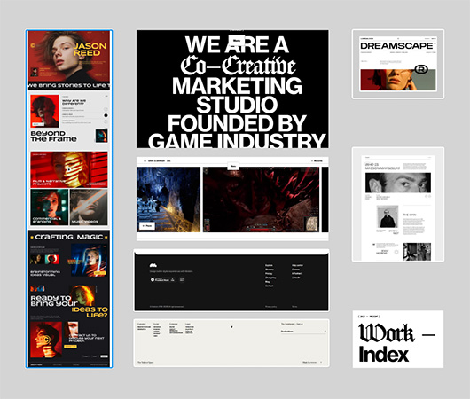

Ricerca e finalità
La prima fase del nostro lavoro è stata caratterizzata dalla ricerca di un tema preciso per il nostro sito. Essendo entrambi amanti del mondo dell’illustrazione e dell’arte digitale, abbiamo deciso di dedicare il nostro sito web ad alcuni degli illustratori e creativi italiani più importanti degli ultimi anni. Questo sito vuole essere un prototipo di archivio digitale che possa mettere in risalto il lavoro di questi artisti e fornire alcune informazioni generali riguardanti la storia e i principali stili dell’illustrazione.
Ispirazione
Per creare un’identità visiva adeguata per il nostro sito ci siamo ispirati a diversi siti, tra cui i siti di Summoner, Ostermoor e 11 Tanjung. Ci siamo focalizzati sugli elementi distintivi di questi siti web e a partire da essi abbiamo sviluppato le prime prove di design utilizzando Figma.

Raccolta dei contenuti
In parallelo al processo di design, abbiamo iniziato a scegliere gli artisti e a raccogliere informazioni su di loro, sulle loro opere e sulla storia dell’illustrazione. Ci siamo occupati di selezionare e riadattare i testi e di scegliere le immagini da inserire.


Design e prototipazione
Dopo aver individuato una direzione creativa che ci soddisfaceva, abbiamo dato inizio all’ultima fase, quella dello sviluppo del prototipo finale. Abbiamo curato l’aspetto grafico ed estetico in Figma, così da avere una base pronta da convertire in HTML e CSS. Abbiamo inoltre implementato Javascript per la creazione di alcuni elementi animati e responsive.